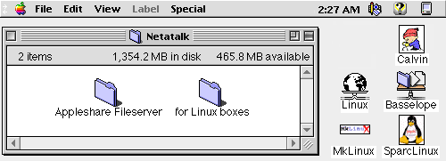
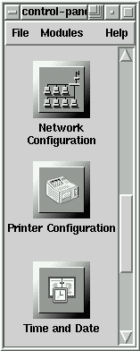
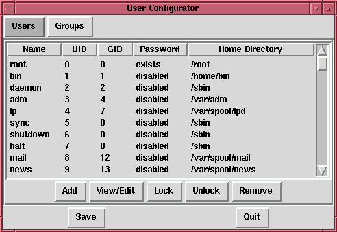
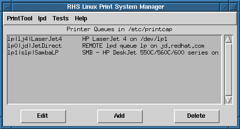
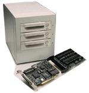

"Linux Gazette...making Linux just a little more fun!"
Replacing Windows NT Server with Linux
Copyright (c) 1997 Quinn P. Coldiron
qcoldiro@unlinfo.unl.edu
Table of Contents
Introduction
Section 1--Outlining Our Situation
Section 2-- Why we chose RedHat Linux
Section 3--Under the Hood
Appendix A--RedHat
5.0 Installation Guide
Appendix B--Samba
Appendix C--DOSEMU
Manual
Introduction
Network Operating Systems (NOS) have many features and capabilities
that allow the Information Systems departments of most organizations to
better server your organization and help streamline work flow. Each NOS
has different features and a excels in different areas. Traditionally,
Novell Netware has been viewed as the best file/printer server, Unix was
viewed as the premiere application and database server and recently, Windows
NT has come in as a good choice for the smaller networks as a file/printer
server or application server. The market has become very aggressive with
each of these platforms branching out into each others market area. Microsoft
has expanded NT into the midrange server market once dominated by Novell
and is trying to get into the high end market which was once filled by
Unix venders such as Sun, Hewlett Packard and Silicone Graphics.
I inherited an aging Novell Netware 3.11 server when I began my career
at the University of Nebraska Press that was on an under powered Pentium
90 and had older disk drives that were failing. I also wanted to expand
into other areas, so I knew this was going to be my first project. When
I began looking at my options to replace our aging Novell Netware server,
I of course turned first to the just released Windows NT Server 4.0. The
marketing materials, magazines and television advertisements all told me
that this was the one thing that would solve all my problems. The operating
system promised to be easier to setup and maintain than the Netware product
it was replacing and it could easily handle the 55 users on my network.
Fourteen months later, we are running Linux as our server.
Linux is a completely free reimplementation of the POSIX specification,
with SYSV and BSD extensions (which means it looks like Unix, but does
not come from the same source code base), which is available in both source
code and binary form. Its copyright is owned by Linus Torvalds <torvalds@transmeta.com>
and other contributors, and is freely redistributable under the terms of
the GNU General Public License (GPL). A copy of the GPL is included with
the Linux source; you can also get a copy from ftp://prep.ai.mit.edu/pub/gnu/COPYING.
Linux is not public domain, nor is it `shareware'. It is `free' software,
commonly called freeware, and you may give away or sell copies, but you
must include the source code or make it available in the same way as any
binaries you give or sell. If you distribute any modifications, you are
legally bound to distribute the source for those modifications. See the
GNU General Public License for details.
Linux is still free as of version 2.0, and will continue to be free.
Because of the nature of the GPL to which Linux is subject, it would be
illegal for it to be made not free. Note carefully: the `free' part involves
access to the source code rather than money; it is perfectly legal to charge
money for distributing Linux, so long as you also distribute the source
code. This is a generalization; if you want the fine points, read the GPL.
Linux runs on 386/486/Pentium machines with ISA, EISA, PCI and VLB busses.
MCA (IBM's proprietary bus) is not well-supported in 2.0.x and earlier
versions, but support has been added to the current development tree, 2.1.x.
If you are interested, see http://glycerine.itsmm.uni.edu/mca
There is a port to multiple Motorola 680x0 platforms (currently running
on some Amigas, Ataris, and VME machines), which now works quite well.
It requires a 68020 with an MMU, a 68030, 68040, or a 68060, and also requires
an FPU. Networking and X now work. See news:comp.os.linux.m68k
Linux runs well on DEC's Alpha CPU, currently supporting the "Jensen",
"NoName", "Cabriolet", "Universal Desktop Box" (better known as the Multia),
and many other platforms. For more information, see http://www.azstarnet.com/~axplinux/FAQ.html
Linux runs well on Sun SPARCs; most sun4c and sun4m machines now run
Linux, with support for sun4 and sun4u in active development. Red Hat Linux
is (as of this writing) the only Linux distribution available for SPARCs;
see http://www.redhat.com/support/docs/rhl-sparc/
Linux is being actively ported to the PowerPC architecture, including
PowerMac (Nubus and PCI), Motorola, IBM, and Be machines. See http://www.cs.nmt.edu/~linuxppc/
and http://www.linuxppc.org/
Ports to other machines, including MIPS and ARM, are under way and showing
various amounts of progress. Don't hold your breath, but if you are interested
and able to contribute, you may well find other developers who wish to
work with you.
Linux is no longer considered to be in beta testing, as version 1.0
was released on March 14, 1994. There are still bugs in the system, and
new bugs will creep up and be fixed as time goes on. Because Linux follows
the ``open development model'', all new versions will be released to the
public, whether or not they are considered ``production quality''. However,
in order to help people tell whether they are getting a stable version
or not, the following scheme has been implemented: Versions 1.x.y, where
x is an even number, are stable versions, and only bug fixes will be applied
as y is incremented. So from version 1.2.2 to 1.2.3, there were only bug
fixes, and no new features. Versions 1.x.y, where x is an odd number, are
beta-quality releases for developers only, and may be unstable and may
crash, and are having new features added to them all the time. From time
to time, as the current development kernel stabilizes, it will be frozen
as the new ``stable'' kernel, and development will continue on a new development
version of the kernel.
The current stable version is 2.0.31 (this will continue to change as
new device drivers get added and bugs fixed), and development has also
started on the experimental 2.1.x kernels. If 2.0.x is too new for you,
you may want to stick with 1.2.13 for the time being. However, the latest
releases of 2.0 have proved quite stable. Do note that in order to upgrade
from 1.2 to 2.0, you need to upgrade some utilities as well; you may wish
to upgrade to the latest version of your Linux distribution in order to
obtain those utilities. The Linux kernel source code also contains a file,
Documentation/Changes, which explains these changes and more.
Most versions of Linux, beta or not, are quite stable, and you can keep
using those if they do what you need and you don't want to be on the bleeding
edge. One site had a computer running version 0.97p1 (dating from the summer
of 1992) for over 136 days without an error or crash. (It would have been
longer if the backhoe operator hadn't mistaken a main power transformer
for a dumpster...) Others have posted uptimes in excess of a year. One
site still had a computer running Linux 0.99p15s over 600 days at last
report.
One thing to be aware of is that Linux is developed using an open and
distributed model, instead of a closed and centralized model like much
other software. This means that the current development version is always
public (with up to a week or two of delay) so that anybody can use it.
The result is that whenever a version with new functionality is released,
it almost always contains bugs, but it also results in a very rapid development
so that the bugs are found and corrected quickly, often in hours, as many
people work to fix them.
In contrast, the closed and centralized model means that there is only
one person or team working on the project, and they only release software
that they think is working well. Often this leads to long intervals between
releases, long waiting for bug fixes, and slower development. The latest
release of such software to the public is sometimes of higher quality,
but the development speed is generally much slower.
As of October 24, 1997, the current stable version of Linux is 2.0.31,
and the latest development version is 2.1.59.
I will begin this report by covering the areas that we were concerned
about and giving reasons that were chose options that we went with. I will
not get very technical in this fist section, but will cover in detail how
we implemented each part of the system and give examples of the configuration
files in section two.
Section 1
Our Situation
When I became the Information Systems Department manager for the University
of Nebraska Press I inherited a very tired and aging Novell Netware 3.1
server that was handling all the network serving duties for approximately
fifty users. This is not a large network and our needs are not out of the
ordinary, but this machine was due for replacement. Novell was on version
4.x, NT 4.0 had just come out and this machine was only a Pentium 90 with
data drives that were noisier than Nebraska's memorial stadium.
It was time to begin the search for replacements and I had the same
issues to deal with that my predecessors had, plus some new ones. The main
issue was compatibility with our order fulfillment and inventory system
called The Cat's Pajamas. This system was originally developed on the Data
General line of mini and mainframe computers using its interpreted language.
The system was ported to PC servers (mainly Novell Netware) when a company
called Subject Wills ported the interpreter to the PC platform. It has
a character based user interface, stores all its data in flat indexed text
files and is pretty fast and stable on the Novell platform. Our new requirements
were for remote access for our warehouse, and if possible, access for the
five Macs that we have, but spend as little money as possible.
I was not very interested in upgrading our current Netware license,
since at this time Novell was playing the CEO of the Month game which had
caused me to lose much of my confidence in the company. The next logical
choice was Microsoft Windows NT. I called Cats and asked if the application
would run on NT and they told me that they had a few installations and
things seemed to be running fine, but I would need a different version
of the DBC interpreter, which they uploaded for me. I proceeded to copy
the entire system and database to the NT server and logged on from my Windows
95 PC. I had to rewrite the batch file that Cats uses to start because
they were using Netware network commands, but I was able to get them changed
and get a session up.
At this point I thought this looked very good, so I ordered the production
server. The server was a dual CPU Pentium 150 with built in Adaptec 2940UW
SCSI controller and 256MB of RAM. I thought this would be perfect to act
as the CATS server, file server and printer server for 50 people, especially
since Netware was doing this on a Pentium 90 with 64 MB of RAM. I got the
server a few weeks later, installed NT 4.0 and Cats. After I got Cats installed
I had our business department and Customer Service department try running
some large and CPU intensive reports on it and things seemed to run great,
so we pushed it into service. At this same time I was setting up a RedHat
Linux 4.1 machine on a Pentium 100 with 32 MB of RAM. I had used RedHat
Linux in my previous position with great luck as a web server and StreamWorks
audio/video server so I wanted to see if it could fit in here, but I didn't
know where or how.
Life after moving Cats to NT was a nightmare. The system was crashing
two to three times a day with no reason that I could find. I was on the
phone with Microsoft and Cats constantly, but nobody could figure it out.
Microsoft had me apply Service Packs one through three and a few HotFixes,
which helped, but it still was crashing at least twice a week with the
infamous "Blue Screen of Death". After many weeks and about $1500.00 in
phone support from Microsoft, the technical support rep told me that I
should find a better software package than The Cat's Pajamas. This is was
not the solution I was looking for, since this is the package that a sizeable
percentage of presses our size nationwide are running, so I was forced
to bring the old Novell server back into production until I could figure
something out.
By this time I had upgraded the RedHat Linux machine to version 4.2,
but it still wasn't doing much, so I added two IDE 1.6 GB hard drives,
installed SAMBA and copied CATS over to this computer to play a little.
I was able to connect from my Windows 95 computer and run Cats without
any modifications to the batch file I had created for the NT server. I
had the Business manager and Customer Service manager try the reports again
and everything seemed fine, but I still had my doubts, so I just kept the
system up for myself and the IS department to test until a later date.
The Netware server was still holding on and doing its job until I got
a call one Thursday night at about 9:00 from our Customer Service manager.
He had been running the reindexing program to prepare for the month-end
closing that was to start Friday, but the server had crashed. I worked
on it until about 12:30 am and finally got it working, but the whole thing
died again Friday morning at about 6:30 and again at 7:00, so I knew we
were in trouble. The only option left was to replace the server now and
the only thing I had was the Linux server, so I restored Cats off our Windows
NT tape backup machine to the Linux server and changed the login scripts
to connect the users to this server for the Cats drives. Within one hour,
we were back in operation.
After completing the morning duties, we normally run a complete Cats
backup before we continue with closing which usually would take two hours
to complete on the Netware server. The Linux machine was able to do the
entire backup in 45 minutes, cutting a little over an hour off our closing
time. This increase in speed came from a decrease in hardware because the
Linux server was running only 32 MB in RAM and IDE hard drives where the
Netware server had 64 MB in RAM and SCSI drives. The speed increase has
been noticed in daily work also. I get almost daily remarks that the system
seems to be running faster and more reliable.
We have recently upgraded the CPU to a 200Mhz Pentium and have upgraded
the Memory to 64 MB to handle the newest plans of making this server replace
our Windows NT file/printer server, which still crashes about twice a month
for no reason, even after an additional $1,500 in tech support with Microsoft.
This single computer running RedHat Linux will replace both our Novell
Netware 3.11 server and our Windows NT 4.0 server, while decreasing total
hardware requirements. With the recent advances from the Samba team in
supporting the NT domain structure and the December 1997 release of RedHat
5.0, I expect to have a very efficient and inexpensive server for our Windows
95, Windows NT and Macintosh clients.
Section 2
Why
We Chose RedHat Linux
Linux is a very feature rich operating system. Many of its features are
not found on its commercial competitor Windows NT due to the fact that
Unix has been in constant development since it was invented in the early
1970's. Even though Linux has only been around since the early 90's, it
benefits from the rich archives of Unix applications and utilities because
of its POSIX compliance. Linux is unique in that the kernel does not use
any code from previous Unix implementations, but can still tap into the
libraries of BSD and System V distributions. I feel the strongest feature
of Linux is the Internet itself and the many technical users that are responsible
for the development of the many drivers and ports to other hardware platforms.
Many Intel platform bug fixes are release for Linux before they are release
in other ``mainstream'' operating systems mainly due to the fact the users
are also the developers.
-
· multitasking: several programs running at once.
-
· multi-user: several users on the same machine at once (and no
two-user licenses!)..
-
· multiplatform: runs on many different CPUs, not just Intel.
-
· multiprocessor: SMP support is available on the Intel and SPARC
platforms (with work currently in progress on other platforms), and Linux
is used in several loosely-coupled MP applications, including Beowulf systems
(see http://cesdis.gsfc.nasa.gov/linux-web/beowulf/beowulf.html) and the
Fujitsu AP1000+ SPARC-based supercomputer.
-
· runs in protected mode on the 386.
-
· has memory protection between processes, so that one program can't
bring the whole system down.
-
· demand loads executables: Linux only reads from disk those parts
of a program that are actually used.
-
· shared copy-on-write pages among executables. This means that
multiple process can use the same memory to run in. When one tries to write
to that memory, that page (4KB piece of memory) is copied somewhere else.
Copy-on-write has two benefits: increasing speed and decreasing memory
use.
-
· virtual memory using paging (not swapping whole processes) to
disk: to a separate partition or a file in the filesystem, or both, with
the possibility of adding more swapping areas during runtime (yes, they're
still called swapping areas). A total of 16 of these 128 MB swapping areas
can be used at once, for a theoretical total of 2 GB of usable swap space.
It is simple to increase this if necessary, by changing a few lines of
source code.
-
· a unified memory pool for user programs and disk cache, so that
all free memory can be used for caching, and the cache can be reduced when
running large programs.
-
· dynamically linked shared libraries (DLL's), and static libraries
too, of course.
-
· does core dumps for post-mortem analysis, allowing the use of
a debugger on a program not only while it is running but also after it
has crashed.
-
· mostly compatible with POSIX, System V, and BSD at the source
level.
-
· through an iBCS2-compliant emulation module, mostly compatible
with SCO, SVR3, and SVR4 at the binary level.
-
· all source code is available, including the whole kernel and all
drivers, the development tools and all user programs; also, all of it is
freely distributable. Plenty of commercial programs are being provided
for Linux without source, but everything that has been free, including
the entire base operating system, is still free.
-
· POSIX job control.
-
· pseudoterminals (pty's).
-
· 387-emulation in the kernel so that programs don't need to do
their own math emulation. Every computer running Linux appears to have
a math coprocessor. Of course, if your computer already contains an FPU,
it will be used instead of the emulation, and you can even compile your
own kernel with math emulation removed, for a small memory gain.
-
· support for many national or customized keyboards, and it is fairly
easy to add new ones dynamically.
-
· multiple virtual consoles: several independent login sessions
through the console, you switch by pressing a hot-key combination (not
dependent on video hardware). These are dynamically a located; you can
use up to 64.
-
· Supports several common filesystems, including minix, Xenix, and
all the common system V file systems, and has an advanced filesystem of
its own, which offers filesystems of up to 4 TB, and names up to 255 characters
long.
-
· transparent access to MS-DOS partitions (or OS/2 FAT partitions)
via a special filesystem: you don't need any special commands to use the
MS-DOS partition, it looks just like a normal Unix filesystem (except for
funny restrictions on filenames, permissions, and so on). MS-DOS 6 co pressed
partitions do not work at this time without a patch (dmsdosfs). VFAT (WNT,
Windows 95) support is available in Linux 2.0 ·special filesystem
called UMSDOS which allows Linux to be installed on a DOS filesystem.
-
· read-only HPFS-2 support for OS/2 2.1
-
· HFS (Macintosh) file system support is available separately as
a module.
-
· CD-ROM filesystem which reads all standard formats of CD-ROMs.
-
· TCP/IP networking, including ftp, telnet, NFS, etc.
-
· AppleTalk server
-
· Netware client and server
-
· Lan Manager (SMB) client and server
-
· Many networking protocols: the base protocols available in the
latest development kernels include TCP, IPv4, IPv6, AX.25, X.25, IPX, DDP
(AppleTalk), NetBEUI, Netrom, and others. Stable ne work protocols included
in the stable kernels currently include TCP, IPv4, IPX, DDP, and AX.25.
The system has to be available 365 days a year.
The Linux server has proven to be as reliable as any other server operating
system I have ever used, and more reliable than most. My past experience
includes managing Novell Netware, Windows NT 3.51 and 4.0 and Irix (Silicon
Graphics) servers. I must say that Novell has always been a steady performer,
but I have always felt that it was more complex than it needed to be. The
Silicon Graphics machines were always rock solid, but they should be when
you pay more than $20,000 for a single server.
My Linux server was initially setup in January 1997 as a test platform
to see if it could handle being a production server. At this time I had
installed a copy of The Cat's Pajamas, Apache, StreamWorks (audio/video
server) and Samba. Using Samba, I was able to connect the Information Systems
Department to this server so we could run Cats and test the audio/video
server. A typical day of testing the system would include reindexing and
reformatting Cats while serving multiple 100 megabyte video files and acting
as a file server. The Linux machine was able to handle all of this while
running on only 32 megabytes of RAM and using a Pentium 100 CPU.
From January 1997 to July 1997, we experienced only three shutdowns
of this server, two of which were caused by power failures in the building
and the third time was due to stupidity on the administrator's part. This
reliability was a key factor in our judgment to use Linux as our server
platform.
The installation of NT was simple, and it was easy to get the system
connected to all the printers, but it proved to be unreliable. We were
experiencing crashes every day, even after installing service packs one
and two. I then installed a hot fix to service pack two which was to fix
errors in the Macintosh services which helped. I was down to crashing just
one to two times a month. I also tried to run Cats off this system, which
was a complete disaster since we could not get more than five users at
a time in Cats, and reports would take forever to run.
The new server must be able to serve the Mac users
as well as the Windows clients.
The server must be able to allow connections from Windows and Macintosh
clients. All major server operating system allow for this, including Linux.
To server Windows clients, Linux uses a package called Samba. Samba is
server software for computers running under Unix or another Unix-like operating
systems with standard TCP/IP available. Samba, as it stands right now,
depends on Unix file structure, permissions, system calls and services.
It provides file and printer services for clients using some variants of
SMB (Server Message Block) protocol. SMB is a "native" networking protocol
used by MS-DOS based (in a very broad sense, including derivatives) clients.
They include those from IBM, ICL, Microsoft and even one particular Novell
product. In particular clients are distributed with `Windows for Workgroups',
`Windows 95', 'Windows NT', 'OS/2 Warp and others.
Some of Samba's server cousins include DEC Pathworks, Microsoft LAN
Manager/X, OS/2 Lan Manager, IBM LAN Server, Syntax Server and Windows
NT Server. Some clients such as Windows 95/Workgroups or Warp Connect can
also act as low volume servers with limited management facilities.
SMB is becoming very popular, mainly owing to these factors:
-
· Windows 95 has dial-up access to PPP servers with an included
service, and this service allows one to "browse" to public shares on the
Internet.
-
· Samba is "free" and this is a lot less expensive than Novell!
(friendlier too!)
-
· With Samba, Unix servers, well connected to a global network,
can speak in a "native" protocol of clients. It is much simpler to maintain
one more protocol on a capable server than teach new tricks to multiple
clients which were never meant to do something else.
-
· There is an established, well tested way of doing SMB over TCP/IP
described in publicly available RFC 1001 and RFC 1002 documents. This means
that SMB has a head start when it comes to Internet integration.
|  |
On the Macintosh side, Netatalk provides the connectivity
services. Netatalk is a Unix implementation of the AppleTalk Protocol Suite,
originally for BSD-derived systems. It includes support for routing AppleTalk,
serving Unix and AFS file systems over AFP (AppleShare), serving Unix printers
and accessing AppleTalk printers over PAP. A number of other minor printing
and debugging utilities are also included. |
Compatibility with Existing Applications
This server would have to be compatible with The Cat's
Pajamas
When we tried to move to Windows NT, we were given a migration guideline
from The Cats Pajama's to follow. The instructions were simple and the
entire migration took little time, but performance was terrible. We needed
a system that could handle serving the system to the network and help maintain
the integrity of the Cats data files. I have been told that Unix heavily
caches file I/O activity (more so than Windows NT or Novell Netware), so
this added to my hopes that Linux would be a strong server platform for
Cats, which is a file I/O intensive application.
My hopes were verified when we formally flipped the switch on the Linux
server and turned off the Novell server. Cats ran smoothly and gracefully
scaled up to the normal daily user level without any slowdowns or misfortunes.
The Novell Netware server would normally experience periods when the system
would slow down severely, and then speed back up to normal levels after
5 to 10 minutes. During these slowdowns, Cat's would become virtually useless,
and sometimes users would be booted out of Cat's totally.
Another key area that I needed to be compatible with was the world Wide
Web. I needed to be able to get CGI programs that were already tested and
in use without having to develop them all myself. I also wanted to be able
to get help easily and cheaply on setting up the web server and fixing
it when it breaks. Linux uses Apache, the most widely used web server in
the world. I can easily get support from mailing lists , news groups and
Internet BBS's.
(http://www.netcraft.com/survey/)
After installing the Windows NT server, many users
complained about slows access times for the network drives.
My users equate network drive access speed with network quality. They were
very pleased with the speed of saving and opening files when they were
on the Novell Netware server, but expressed disappointment in the speed
of saving and opening files when we switch to the Windows NT server. One
way that I have very unscientifically measured the speed of the Linux server
was when we were using a Windows NT 4.0 machine to backup the Cats files
off the Linux machine. This operation took 45 minutes while the exact same
operation on the Novell server would take at least an hour longer. Currently
I am backing up CATS by creating a gzipped tar file directly on the Linux
server and it takes a little less than 45 minutes. Below is part of the
output from the df command that shows the drive I have Cats on. This shows
the current size of our Cats installation so you can get an idea of how
much information is backed up in 45 minutes.
Filesystem 1024-blocks Used Available Capacity Mounted on
/dev/hdc1 2417493 1584580 707923 69%
/usr/local/samba-sys
I could not afford to go through another costly installation
.
During the twelve months of running Windows NT 4.0 server, I have spent
more than $3,000 in technical support with Microsoft to remedy various
problems, including the frequent crashes and problems running Cats. The
fix for the crashes was always ``Install the latest service pack or hot
fix and call us back tomorrow.'' The fix for Cats was ``Get rid of The
Cat's Pajamas and find a better system which was more Windows compatible
to replace it.'' I wish I would have documented that support call with
Microsoft so I had the name of the tech rep.
Technical support is no the only area of expense involved with Windows
NT. The table below shows typical applications and the cost for each platform.
| Service |
Microsoft |
Cost |
Linux |
Cost |
| Operating
System |
Windows NT Server 4.0 |
$2,950.00 |
Linux RedHat 5.0 (CD) |
$49.00 |
| Web
Server |
Internet Information Server |
$0.00
|
Apache |
$0.00
|
| E-Mail |
Exchange 5.0 Enterprise |
$6,400.00
|
Sendmail,UW IMAP,POP-3 |
$0.00
|
| Telnet
server |
SLNet (4 user licensee) |
$300.00
|
Included free unlimited licensee |
$0.00
|
| FTP
server |
Included with IIS |
$0.00
|
Included |
$0.00
|
| Relational
Database |
SQL Server 6.5 |
$10,650.00
|
Just Logic SQL |
$219.00
|
| Proxy
Server |
Microsoft Proxy Server |
$995.00
|
Squid Object Cache |
$0.00
|
| Backup
Software |
Included |
$0.00
|
BRU, included |
$0.00
|
| Total
Cost |
|
$20,995.00
|
|
$268.00
|
|
|
|
|
|
| Number
of Users |
100 |
|
100 |
|
| Cost
per seat |
|
$212.95
|
|
$2.68
|
Low hardware requirements
I did not want to build the next Cray just to serve
55 users.
As at most University Press's, our operating budget is relatively small,
especially when compared to commercial business and some other campus departments.
This financial restriction did not allow me to purchase a server hardware
platform that I would have like to have for the NT server, but the system
was not low-end either.
Our Windows NT 4.0 server:
| OS |
Windows NT Server 4.0 (SP3) |
| CPU |
2 x Pentium 150 |
| RAM |
256 Megabytes |
| SCSI |
Adaptec 2940 |
|
-All data drives are SCSI |
|
-Boot drive is IDE |
| Ethernet |
NE2000 clone |
Our RedHat Linux 4.2 server:
| OS |
RedHat 4.2 |
| CPU |
Single Pentium 200 |
| RAM |
64 megabytes |
| SCSI |
DPT SmartCache IV |
|
-RAID Station 3 (RAID 5) |
|
-Boot drive is IDE |
| Ethernet |
NE2000 clone |
The RAID which is listed on the Linux server was not purchased
strictly for the Linux server, but was purchased to be placed on whatever
server we decided to put into production.
For myself and staff .
|  |
Unix usually gets the standard rap of being difficult to
manage and requiring a steep learning curve. While many of the tools that
will be used to manage the system are still command line based, a growing
number are graphical and comparable to Windows in ease of use. This is
especially true with the RedHat distribution, which includes a graphical
control panel which allows the administrator to change system setting without
working through the many text files which store this information. The control
panels I use the most are the ones which setup the printers, file system,
users and packages. If you use the included RedHat Package manager to install
new applications, they are listed in the package manager, which allows
you to graphically see what applications are installed on your system and
remove them if wanted, much like the uninstall option on Microsoft Windows.
 |

I don't want to start over each time a new version
comes out.
RedHat Linux provides a very simple upgrade system in its installation
set. The upgrade is actually better than the Microsoft Windows NT upgrade
path, since you do not have to uninstall the previous version first.
While it is not required that you uninstall the previous version of
Windows NT before installing the current release (4.0), it is recommended.
This can be a very intensive installation, since you would need to setup
all the user accounts again, along with reinstalling any software and automated
systems and scripts.
When I upgraded from RedHat 4.1 to 4.2, the installation when smoothly
whiteout any problems. While this was not a major revision step, RedHat
has assured me that the soon to be released version 5.0 will offer a smooth
transition from 4.2.
From the RedHat Linux manual:
| 1.5 Upgrading from a Prior Version
The installation process for Red Hat Linux 4.2 includes
the ability to upgrade from prior versions of Red Hat Linux (2.0, 2.1,
3.0.3, 4.0, and 4.1) which are based on RPM technology. Upgrading your
system installs the modular 2.0.x kernel as well as updated versions of
the packages which are installed on your machine. The upgrade process preserves
existing configuration files using a .rpmsave extension (e.g., sendmail.cf.rpmsave)
and leaves a log telling what actions it took in /tmp/upgradelog. As software
evolves, configuration file formats can change, so you should carefully
compare your original configuration files to the new files before integrating
your changes.
To upgrade a Red Hat Linux system, you must use a boot
floppy (and possibly a supplemental floppy), just as if you were performing
a full install. After selecting the medium to install from (and setting
up networking information if it's required), the installation procedure
prompts you to either Install or Upgrade; select Upgrade. This upgrade
procedure is the functional equivalent of running the upgrade script in
prior versions of Red Hat Linux.

Please note that some upgraded packages may ``depend''
on other packages which may not be installed on your system. The upgrade
procedure takes care of these dependencies, but it may need to install
additional packages in order to satisfy them. |
Remote control and administration
One of the most attractive features of Linux (or Unix in general) is the
ability to truly remotely control the server. Since Linux comes with a
telnet server built in, you can use virtually any computer, regardless
of operating system to telnet into the computer to do all administrative
tasks. To remotely administer a Windows NT server, you must purchase a
separate application to allow remote control. The most popular program
for this is PCAnywhere by Symantec. This approach can become costly because
you must purchase a copy for the server to act as the host, and a copy
for each computer that needs to remotely control the server. How many remote
computers need to control the server? This depends on each installation,
but I have found that it save me a lot of running by having the ability
to control the server from every PC on my network, and from home.
Telnet is text only, so this will be a drawback for many, but luckily
for us, Linux supports X Windows. X Windows can be used locally on the
server's console, like Windows NT, but can also be run remotely from any
computer that can run an X client. These remote terminals can by other
computers running Linux, or any other flavor of Unix and many X clients
can be downloaded or purchased for Windows, Windows NT and Macintosh computers.
Running X terminals does require more bandwidth, so I prefer just telneting
into the server.
Another nice feature is the ability to display results of various system
utilities in a web page. One of the things our Customer Service manager
likes to know is which users have which files open and locked while using
Cats. I wrote a simple Perl script to run the smbstatus program and print
the results as a web page.
The output web page:
| Snapshot of users for: Fri
Dec 5
11:41:18 CST 1997
This page shows currently logged on
users and locked files for the UNPLINUX server.
Right-click this page and select REFRESH
or RELOAD to force an update
Samba version 1.9.17p1
Service uid gid pid machine
----------------------------------------------
cdrom root root 11697 enterprise (129.93.31.35)
Thu Dec 4 16:35:23 1997
quinn root root 11697 enterprise (129.93.31.35)
Thu Dec 4 16:35:23 1997
M-DATA cbrumm cbrumm 11435 ds9 (129.93.31.14)
Thu Dec 4 16:08:16 1997
programs root root 11697 enterprise
(129.93.31.35) Thu Dec 4 16:35:23 1997
L-NE cbrumm cbrumm 11435 ds9 (129.93.31.14)
Thu Dec 4 16:08:29 1997
N-DBC cbrumm cbrumm 11435 ds9 (129.93.31.14)
Thu Dec 4 16:08:29 1997
O-WORK cbrumm cbrumm 11435 ds9 (129.93.31.14)
Thu Dec 4 16:08:29 1997
P-HIST cbrumm cbrumm 11435 ds9 (129.93.31.14)
Thu Dec 4 16:08:29 1997
<snip>
Locked files:
Pid DenyMode R/W Name
------------------------------
19818 DENY_NONE RDWR fileauth.txt
Fri Dec 5 11:41:14 1997
21212 DENY_NONE RDWR fileauth.txt
Fri Dec 5 11:40:28 1997
20590 DENY_NONE RDWR fileauth.txt
Fri Dec 5 11:38:56 1997
21384 DENY_NONE RDWR fileauth.txt
Fri Dec 5 11:06:15 1997
<snip>
19818 DENY_NONE RDWR filebac2.isi Fri
Dec 5 11:02:36 1997
20590 DENY_NONE RDWR filebac2.isi
Fri Dec 5 10:14:44 1997
19818 DENY_NONE RDWR fileauth.isi
Fri Dec 5 11:41:14 1997
21212 DENY_NONE RDWR fileauth.isi
Fri Dec 5 11:40:28 1997
Share mode memory usage (bytes):
92584(90%) free + 7728(7%) used +
2088(2%) overhead = 102400(100%) total |
The script that generates the above page:
#!/usr/bin/perl
# ******************************************************
# * *
# * Author: Quinn P. Coldiron *
# * Date: 12-1-97 *
# * Program: This program shows current
users of the *
# * Samba server. *
# * *
# ******************************************************
# Use cgi-lib CGI library for PERL.
require "/home/httpd/cgi-bin/cgi-lib.pl";
$date = `date`;
$users = `./smbstatus`;
#Get the data from the form.
&ReadParse;
print &PrintHeader;
print "<HTML>\n";
print "<HEAD>\n";
print "<TITLE>Logged In Samba Users</TITLE>\n";
print "</HEAD>\n";
print "<BODY BGCOLOR= #D4D4D4>\n";
print "<H1>Snapshot of users for:
$date</H1>\n";
print "This page shows currently logged
on users and locked files for the UNPLINUX server.<br>\n";
print "Right-click this page and select
REFRESH or RELOAD to force an update<br>\n";
print "<PRE>$users</PRE>\n";
print "</BODY>\n";
print "</HTML>\n"; |
Windows NT provides a graphical program to show a chart us system performance,
but it is recommended that you do not run it on the server that you want
to monitor, because the monitor program itself takes too much of the system
resources, and thus skews the data. Linux provides a system monitoring
tool called TOP that is character based so it can be run on the server.
Since it is character based, you can telnet into the server and run it
from anywhere, getting an accurate picture of how the server is running.
Sample output of TOP:
11:55am up 1 day, 15:02,
3 users, load average: 0.08, 0.04, 0.00
83 processes: 82 sleeping,
1 running, 0 zombie, 0 stopped
CPU states: 2.7% user,
4.2% system, 5.9% nice, 93.7% idle
Mem: 63204K av, 62336K
used, 868K free, 38384K shrd, 5536K buff
Swap: 114908K av, 368K
used, 114540K free 29496K cached
PID USER PRI NI SIZE
RSS SHARE STAT LIB %CPU %MEM TIME COMMAND
22390 root 10 0 540
540 400 R 0 2.8 0.8 0:00 top
22388 cats 3 0 848 848
516 S 0 1.5 1.3 0:00 login
22391 cats 10 0 660
660 524 S 0 0.7 1.0 0:00 bash
6058 root 1 0 3568 3568
1396 S 0 0.5 5.6 1:25 tkdesksh
22283 root 0 0 552 552
424 S 0 0.3 0.8 0:00 in.telnetd
22387 root 1 0 552 552
424 S 0 0.3 0.8 0:00 in.telnetd
21212 quinn 0 0 1084
1084 660 S 0 0.1 1.7 0:02 smbd
20921 root 1 0 588 536
356 S 0 0.1 0.8 0:08 SWserver
1 root 0 0 312 312 244
S 0 0.0 0.4 0:02 init
2 root 0 0 0 0 0 SW
0 0.0 0.0 0:01 kflushd
3 root -12 -12 0 0 0
SW< 0 0.0 0.0 0:00 kswapd
19509 root 0 0 1092
1092 652 S 0 0.0 1.7 0:18 smbd
331 root 0 0 812 812
480 S 0 0.0 1.2 0:00 login
21 root 0 0 280 280
216 S 0 0.0 0.4 0:00 kerneld
240 root 0 0 336 316
280 S 0 0.0 0.4 0:00 gpm
128 root 0 0 368 360
276 S 0 0.0 0.5 0:00 syslogd
137 root 0 0 496 488
268 S 0 0.0 0.7 0:00 klogd |
Under the Hood
Setting up the server
The actual installation of an operating system is often used as a judgement
on how good the system is. Just as with meeting people, you can never change
the first impression. I have found that setting up a RedHat Linux server
is as easy or even easier than setting up a Windows NT server. The setup
includes two floppies have everything needed to get the system to the point
that it can recognize the media (CDROM, FTP site, other server, etc.) that
the installation files are on. Windows NT supplies three floppies for this
purpose, but only supports CDROM installation. I have found that installing
RedHat Linux on a laptop can even be easier, since it can detect the PCMCIA
slots at installation time, while NT cannot. The most important factor
is to be familiar with the hardware you have installed in your machine,
including:
-
· hard drive(s): number and size; if you have more than one, it's
helpful to know which one is first, second, etc.
-
· memory: amount of RAM.
-
· CD-ROM: its interface type (IDE, SCSI, or other interface), and,
for non-IDE, non-SCSI CD-ROMs, the make and model number.
-
· SCSI adapter: make and model number.
-
· network card: make and model number.
-
· mouse: type (serial, PS/2, or bus mouse), protocol (Logitech,
Microsoft, MouseMan, etc.), and number of buttons; also, for serial mice,
the com port it is connected to.
-
· If you will be connected to a network, be sure you know your IP
address, netmask, gateway IP address, name server IP addresses, domain
name, and hostname. If you don't know these values, ask your network administrator.
-
Also, if you will be installing the X Window System, you should be familiar
with the following:
-
· your video card: make and model number or video chipset, amount
of video RAM.
-
· your monitor: make and model number, allowable range of horizontal
and vertical refresh rates.
You can install or upgrade Red Hat Linux/Intel via any of several basic
methods. Depending on the method you use, you need either one or two formatted
high-density (1.44 MB) 3.5-inch diskettes.
Installing from CD-ROM or via NFS requires only a boot diskette. Installing
from a hard drive, via FTP, from an SMB volume, or from a PCMCIA device
(including PCMCIA-based CD-ROMs) requires both a boot diskette and a supplemental
diskette. Section 2.3.1 below explains how to create boot and supplemental
diskettes.
CD-ROM
If you have a Red Hat Linux CD and a boot diskette you will need a supported
CD-ROM drive and either a 3.5 inch floppy drive or an operational installation
of MS-DOS on your machine in order to run the installation utility. If
a boot diskette did not accompany your CD, you will need access to a computer
running either Linux or MS-DOS to create a boot diskette from the CD.
NFS
If you wish to install over a network, you will need to mount the Red
Hat Linux CD-ROM on a machine that supports ISO-9660 file systems with
Rock Ridge extensions. The machine must also support NFS. Export the CD-ROM
file system via NFS. You will need to have name services configured, or
know the NFS server's IP address, and the path to the exported CD-ROM.
FTP
For an FTP install, you must have a boot disk and supplemental disk.
You will need to have a valid name server configured or the IP address
of the FTP server you will be using. You will also need the path to the
root of the Red Hat Linux directory on the FTP site.
SMB Shared Volume
If you wish to install from an SMB shared volume, you will need to mount
the Red Hat Linux CD-ROM on a Microsoft Windows NT or Windows 95 server
that supports shared volumes. You will need to have name services configured,
or know the server's IP address; you will also need the name of the shared
volume containing the Red Hat Linux CD-ROM and the account number and password
to use to access the volume.
Hard Drive
To install Red Hat Linux from a hard drive you will need the same boot
and supplemental disks used by the FTP install. You must first create a
RedHat directory at the top level of your directory tree. Everything you
will install should be placed in that directory. First copy the base subdirectory,
then copy the packages you want to install to another subdirectory called
RPMS. You can use available space on an existing DOS partition or a Linux
partition that is not required in the install procedure (for example, a
partition that would be used for data storage on the installed system).
If you are using a DOS filesystem, you may not be able to use the full
Linux filenames for the RPM packages. The installation process does not
care what the filenames look like, but it is a good idea that you keep
track of them so you will know what you are installing.
PCMCIA
If your CD-ROM, Ethernet card, or local hard disk is connected to a
PCMCIA adapter, you must install with PCMCIA support. You need a supported
PCMCIA controller and a supported PCMCIA SCSI adapter or Ethernet card.
Installing via PCMCIA requires the use of a supplemental diskette.
Please See Appendix A for The Official RedHat Installation Guide.
Samba Installation/Setup
Installing the Samba RPM is the easiest way to install, as you only need
to download the file and type rpm -I filename and it is installed.
Setting up Samba is simple, as you just edit a text file to tell it what
directories are going to be shared to the Windows clients. The text file's
name is smb.conf and is located in the /etc. directory if you installed
Samba using RPM. If you downloaded the .tar archive and installed Samba
using the default installation, you will find the smb.conf file in /usr/local/samba/lib/.
An advantage to installing Samba using RPM is that it is easier. A disadvantage
is that the versions are not as current, but they are usually more stable
and reliable. I choose to go directly to the Samba web pages and download
the most current non-beta release.
The picture on the left is the Network Neighborhood window on my NT
workstation and is currently showing everything that I have access to on
my Linux server.
If you installed Samba using RPM, it will automatically be started on
system startup, but I had to manually add it to my rc.local script to have
it start on bootup because I did not install from the RPM. I chose to install
from the tarballs available at the official Samba site, so I could always
have a current installation. To start the server manually, I just issue
these commands:
/usr/local/samba/bin/smbd -D
/usr/local/samba/bin/nmbd -D
Extensive has been accomplished that allows Samba to act more like an
NT server, including making a Linux server a Primary Domain Controller
and more features are currently being added. I have listed the steps that
I took in making my Linux server the Primary Domain Controller (PDC) for
our network.
1. Set up the server.
a. Create the smb.conf file.
b. Create the netlogon directory.
I put mine in /home.
c. Restart Samba.
2. Setup the Windows 95 clients. (We set our up for roaming profiles.)
Do not reboot until step 3!
a. Control Panel
1. Click Passwords, then Profiles and choose these settings:
a. Users can customize their settings.
b. Include desktop items.
c. Include start menu.
2. In the Control Panel, select Network.
a. Under Identification, set your WORKGROUP name.
b. Access control = USER-LEVEL.
c. Obtain the list from YOUR SERVER NAME.
d. Under Client Configuration
1. Select CLIENT FOR MICROSOFT NETWORKS.
2. Under that client's properties.
a. Log onto Windows NT domain.
b. Enter your WORKGROUP name.
c. Select LOG ON AND RESTORE CONNECTIONS.
e. Set primary network logon to CLIENT FOR MICROSOFT NETWORKS.
b. Set up the user profiles.
1. Install the Policy Editor from the Windows 95 CD.
2. Create a new profile called config.pol and save it into the NETLOGON
share on the Linux server. Make sure you add all the users on your server!
This step only has to be
done once, not on each client.
3. Using the Policy Editor, select Open registry from the File menu and
select the options you want.
4. Save it as config.pol and copy into the netlogon share on the Linux
server. Set its permissions as 755.
3. Reboot the Windows 95 computer(s) and logon.
4. Possible problems.
1. Windows95 OSR2 seems to send
the passwords as uppercase, so try changing the passwords on the Linux
server to uppercase.
2. I had problems making my Linux
server the WINS server, so you have some choices to fix this:
a. If you do have another NT server, make it the WINS server and point
all the clients to it.
b. Disable WINS on each client and edit the c:\windows\Lmhosts.sam file
and add the server and workstations to this file. Save the file as Lmhosts,
NOT Lmhosts.sam This file can be appended to from a server, but
I haven't tried doing it from Linux/Samba. The entries look like this:
xxx.xxx.xxx.xxx computername
c. Disable WINS. At this time, we are running our Win95 clients with WINS
disabled, but we do have a DNS server.
My Samba configuration (smb.conf) file looks like this:
; *******************************************************************
; *
; * Samba config file for UNPLINUX
; * Quinn P. Coldiron
; *
; *******************************************************************
[global]
workgroup = UNP
comment = Unplinux Server
volume = RedHat5
lock directory = /var/lock/samba
locking = yes
strict locking = no
share modes = yes
security = user
os level = 65
domain master = yes
local master = yes
prefered master = yes
domain logons = yes
wins support = yes
;logon script = %m.bat ; per workstation (machine)
;logon script = logon.bat
logon script = %U.bat
preserve case = yes
short case preserve = yes
case sensitive = no
; printing = BSD or SYSV or AIX, etc..
printing = bsd
printcap name = /etc/printcap
load printers = yes
print command = /usr/bin/lpr -r -P %p %s
[netlogon]
comment = Samba Network Logon Service
path = /home/netlogon
case sensitive = no
guest ok = yes
locking = no
read only = yes
browseable = yes ; say NO if you want to hide the NETLOGON share
;admin users = @wheel
create mode = 0755
; ###############################################################################
; # #
; # Printers #
; # #
; ###############################################################################
; I couldn't get the generic printers section to work, so I commented
it out
; and explicitly declared the printers.
;[printers]
; comment = All Printers
; path = /var/spool/samba-print
; browseable = yes
; printable = yes
; Set public = yes to allow user 'guest account' to print
; public = no
; writable = no
; create mode = 0700
[Technology]
comment = Technology Printer
path = /var/spool/samba-print
print = Technology
browseable = yes
printable = yes
public = yes
writeable = yes
create mode = 0777
[Marketing2]
comment = Technology Printer
path = /var/spool/samba-print
print = Marketing2
browseable = yes
printable = yes
public = yes
writeable = yes
create mode = 0777
[Marketing1]
comment = Technology Printer
path = /var/spool/samba-print
print = Marketing1
browseable = yes
printable = yes
public = yes
writeable = yes
create mode = 0777
[CustServ]
comment = Technology Printer
path = /var/spool/samba-print
print = CustServ
browseable = yes
printable = yes
public = yes
writeable = yes
create mode = 0777
[CanonColor]
comment = Color Laser Printer
path = /var/spool/samba-print
print = CanonColor
browseable = yes
printable = yes
public = yes
writeable = yes
create mode = 0777
; ###############################################################################
; # #
; # Shared Volumes #
; # #
; ###############################################################################
[homes]
comment = Home Directories
browseable = no
writable = yes
read only = no
preserve case = yes
short preserve case = yes
;create mode = 0777
[userdata]
comment = All userdata that you are allowed to see.
path = /home
writeable = yes
;Full control for your stuff, full in you group, nothing for other
;people's stuff.
create mode = 0770
[sys]
comment = System drive. Various Press utilities.
path = /usr/local/samba-sys/
writeable = yes
create mode = 0777
[programs]
comment = Program drive. Installation sets and programs.
path = /usr/local/samba-programs
writeable = yes
create mode = 0777
[ulrich]
comment = Ulrich's PLUS.
path = /usr/local/samba-programs/ulrich
create mode = 555
[cdrom]
comment = Internal IDE cdrom. For temporary usage.
path = /mnt/cdrom
[dictionary]
comment = Random House Dictionary.
path = /mnt/scd1
[bip]
comment = Bowker Books In Print CDROM
path = /mnt/scd0
[msoffice]
comment = Microsoft Office Bookshelf Reference.
path = /mnt/scd3
[encarta]
comment = Microsoft Encarta
path = /mnt/scd2
[press]
comment = Press share. Marketing maps this to U:
path = /home/press
writeable = yes
create mode = 0777
[CATS-VOL]
comment = Entire Cats volume for backup
path = /usr/local/samba-cats/
writeable = yes
printable = no
guest ok = yes
public = yes
create mask = 0777
[L-NE]
comment = Cat's root. Map as L.
path = /usr/local/samba-cats/ne
writeable = yes
printable = no
guest ok = yes
public = yes
create mask = 0777
[M-DATA]
comment = Cat's data drive. Map as M.
path = /usr/local/samba-cats/ne/data
writeable = yes
printable = no
guest ok = yes
public = yes
create mask = 0777
[N-DBC]
comment = Cat's program drive. Map as N.
path = /usr/local/samba-cats/ne/dbc
writeable = yes
printable = no
guest ok = yes
public = yes
create mask = 0777
[O-WORK]
comment = Cat's work drive. Map as O.
path = /usr/local/samba-cats/ne/work
writeable = yes
printable = no
guest ok = yes
public = yes
create mask = 0777
[P-HIST]
comment = Cat's history drive. Map as P.
path = /usr/local/samba-cats/ne/hist
writeable = yes
printable = no
guest ok = yes
public = yes
create mask = 0777
|
My actual logon.bat batch file is here:
REM *******************************************************
REM * *
REM * University of Nebraska Press network logon script. *
REM * *
REM * Last modified : 10-16-97 *
REM * By: Quinn *
REM * *
REM * The drive letter scheme is leftover from the past *
REM * network administrator and the Novell Netware 3.1 *
REM * server he had. *
REM *******************************************************
REM User's home drives
net use e: \\unplinux\homes
REM General network drives
net use f: \\intrepid\sys
net use g: \\intrepid\userdata
net use h: \\intrepid\dictionary
net use i: \\intrepid\bip
net use j: \\intrepid\programs
net use s: \\unplinux\ulrich
REM CATS drives
net use l: \\unplinux\l-ne
net use m: \\unplinux\m-data
net use n: \\unplinux\n-dbc
net use o: \\unplinux\o-work
net use p: \\unplinux\p-hist
REM Temp entry for Robotronics
REM The old system had robo on the T:\ drive but
REM all new installations will run robo from the j:\ drive.
net use t: \\unplinux\programs |
Netatalk
Installation/Setup
Netatalk offers the same installation options as Samba, so you can choose
either the RPM, or .tar archives. I would choose the RPM here, as they
are the same versions as the .tar files and make life easier during installation.
I really don't have mush to say about this installation, since it was very
simple and straight forward. After installing the package, I just edited
the AppleVolumes.system file and started the daemon. Below is a very simple
AppleVolumes.system file that will give the Mac users their home directory
and a few other volumes that might have stuff they need.
#
# This file is read before (after if -u is specified) the user's
# AppleVolume file. Add extension mappings and volumes here.
#
/usr/local/samba-sys Sys (F drive)
/home Userdata (G drive)
/usr/local/samba-programs Programs (J drive)
# default translation -- note that CR <-> LF translation is
done on all
# files of type TEXT. The first line turns off translation for
files of
# unknown type, the second turns this translation on.
. BINA UNIX
# . TEXT UNIX
# sounds
.mod STrk STrk
.mid Midi ttxt
.aiff AIFF SNdm
.wav WAVE SNdm
.au ULAW SNdm
# video
.moov MooV mMPG
.mov MooV mMPG
.mpg MPEG mMPG
.mpeg MPEG mMPG
# formatted text
.html TEXT MOS!
.rtf TEXT MSWD
.doc WDBN MSWD
# compressed archives
.bin BINA MB2P
.zip ZIP ZIP
.tar TARF TAR!
.gz Gzip Gzip
.Z ZIVM LZIV
.sea ???? SITx
.cpt PACT CPCT
.sit SIT! SIT!
.hqx TEXT SITx
# graphics
.tiff TIFF JVWR
.tif TIFF JVWR
.bmp BMPp JVWR
.pct PICT ttxt
.pict PICT ttxt
.jpeg JPEG JVWR
.jpg JPEG JVWR
.gif GIFf JVWR |
The other file that you need to edit with NetaTalk is papd.conf. This file
hold the printer information.
# Attributes are:
#
# Name Type Default Description
# pd str ".ppd" Pathname to ppd file.
# pr str "lp" LPD printer name.
# op str "operator" Operator name, for LPD spooling.
#
# Some examples:
#
# On many systems (notably not Solaris), no papd.conf is required,
# since papd shares the same defaults as lpd.
#
# A simple example:
#
# terminator:\
# :pr=lp:op=wes:\
# :pd=/usr/share/lib/ppd/HPLJ_4M.PPD:
#
# Note also that papd.conf can list several printers. |
Installing The Cats Pajamas
Installing
Cats on the Server
Installing Cats on a Linux server can be as simple as copying all the files
and directories from the old server to the Linux server's shared volume
for Cats. The way that I set up out server was to install another drive
in the Linux server to hold the Cats installation. I chose an IDE drive
mainly because I didn't have a SCSI card in the server, didn't have an
extra one handy and I was under an extreme time crunch to get Cats back
online. My intentions were to eventually replace the IDE drive with a SCSI
drive over Christmas break, but the performance has been more than satisfactory,
so we are going to leave the setup alone. I mount this drive as /usr/local/samba-cats
and have the permissions set open to the world by running the command chmod
777 /usr/local/samba-cats -R. This is a security risk, but Cats has told
me that the files must be world writeable and readable for Cats to work
properly. I also have the Samba configuration file set up with a mask of
0777, which will make sure that all files written will be readable by all
the users.
The specific portion of the smb.conf file for Cats is listed here:
[CATS-VOL]
comment = Entire Cats volume for backup
path = /usr/local/samba-cats/
writeable = yes
printable = no
guest ok = yes
public = yes
create mask = 0777
[L-NE]
comment = Cat's root. Map as L.
path = /usr/local/samba-cats/ne
writeable = yes
printable = no
guest ok = yes
public = yes
create mask = 0777
[M-DATA]
comment = Cat's data drive. Map as M.
path = /usr/local/samba-cats/ne/data
writeable = yes
printable = no
guest ok = yes
public = yes
create mask = 0777
[N-DBC]
comment = Cat's program drive. Map as N.
path = /usr/local/samba-cats/ne/dbc
writeable = yes
printable = no
guest ok = yes
public = yes
create mask = 0777
[O-WORK]
comment = Cat's work drive. Map as O.
path = /usr/local/samba-cats/ne/work
writeable = yes
printable = no
guest ok = yes
public = yes
create mask = 0777
[P-HIST]
comment = Cat's history drive. Map as P.
path = /usr/local/samba-cats/ne/hist
writeable = yes
printable = no
guest ok = yes
public = yes
create mask = 0777 |
At the time of this writing, we were still running Cats 2.3, so the major
directories were as follows:
ne----+
|---> data
|---> dbc
|---> work
|---> hist |
While we are currently able to get all of our system onto a 2.5 gigabyte
hard drive, I can see a day when we will have a large enough history that
we will need more space. We could just get a larger hard drive, but an
easier upgrade would be to just add another drive and mount it into the
directory tree. We could actually run four drives for Cats by mounting
a different drive into the ne directory for each subdirectory. By doing
this, data would be running on a drive, dbc would be a drive, work would
be a drive and hist would be a drive. In theory, the performance would
increase, since drive access to data would not slow down history searches,
or read/writes to the work drive.
I have written a CGI Perl script to make it simple for our Business
Department and Customer service department to lock Cats during month-end
closing and reindexing procedures. The script asks for a password, and
then replaces the standard batch files to start Cats with another batch
file that says Cats is locked for closing or maintenance. When they are
finished, they can unlock Cats by running the unlock CGI script. The scripts
are listed here:
Lock Cats:
#!/usr/bin/perl
# ******************************************************
# * *
# * Author: Quinn P. Coldiron *
# * Date: 11-24-97 *
# * Program: This locks Cats *
# * *
# ******************************************************
# Use cgi-lib CGI library for PERL.
require "/home/httpd/cgi-bin/cgi-lib.pl";
#Get the data from the form.
&ReadParse;
print &PrintHeader;
print "<HTML>\n";
print "<HEAD>\n";
print "<TITLE>Finished</TITLE>\n";
print "</HEAD>\n";
print "<BODY BGCOLOR= #b7b7b7>\n";
if ( $in{password} =~ "PASSWORD") {
print "<P><B>Finished.</B></P>\n";
print "<P>Batch files written and CATS is <B>locked</B>.</P>\n";
print "<BR>You may access CATS by going to the M: drive and typing
secret.bat\n";
print "This should only be used for Month-end closing, reindexing and
system repairs.\n";
print "<BR><BR>Quinn.\n";
system ("cp /home/httpd/cgi-bin/cats/lock/*.bat /usr/local/samba-cats/ne/data/");
system ("chmod 777 /usr/local/samba-cats/ne/data/*");
} else {
print "Wrong password\n";
}
print "</BODY>\n";
print "</HTML>\n"; |
Unlock Cats:
#!/usr/bin/perl
# ******************************************************
# * *
# * Author: Quinn P. Coldiron *
# * Date: 11-24-97 *
# * Program: This program copies that cats#.bat files *
# * to the correct location. *
# ******************************************************
# Use cgi-lib CGI library for PERL.
require "/home/httpd/cgi-bin/cgi-lib.pl";
#Get the data from the form.
&ReadParse;
print &PrintHeader;
print "<HTML>\n";
print "<HEAD>\n";
print "<TITLE>Finished</TITLE>\n";
print "</HEAD>\n";
print "<BODY BGCOLOR= #b7b7b7>\n";
if ( $in{password} =~ "PASSWORD") {
print "<P><B>Finished.</B></P>\n";
print "<P>Batch files written and CATS is unlocked.</P>\n";
print "<BR><BR>Quinn.\n";
system ("cp /home/httpd/cgi-bin/cats/unlock/*.bat /usr/local/samba-cats/ne/data/");
system ("chmod 777 /usr/local/samba-cats/ne/data/*");
} else {
print "Wrong password!\n";
}
print "</BODY>\n";
print "</HTML>\n";
|
Configuring
your Windows clients
I have setup our Cats installation to share each required cats directory
as a hard mounted drive letter. The specific portion of the login script
that mounts cats is listed here:
REM CATS drives
net use l: \\unplinux\l-ne
net use m: \\unplinux\m-data
net use n: \\unplinux\n-dbc
net use o: \\unplinux\o-work
net use p: \\unplinux\p-hist |
My cats batch file is here:
PATH=C:\;C:\WINNT;C:\WINDOWS;L:\;M:\;N:\;O:\;P:\
SET DBC_FILEPATH=L:\;M:\;N:\;O:\;P:\
Set DBC_PREP=M:
Set DBC_FILES=140
Set DBC_PGMSIZE=65024
Set DBC_CMDLINE=OLD
SET DBC_XKEYS=ON
Set DBC_COMPAT=DOS
Set DBC_PORT=24
SET DBC_DBCPATH=N:\
M:
DBC.EXE |
I have also followed the suggestions on the Cats web site http://www.tcpj.com
for specific settings for Windows 95. I have found that all of these do
help in getting Cats to run better.
Configuring
the DOS emulator to run Cats
Linux has a very interesting program called DOSEMU which creates a ``DOS
box'' that can run many DOS applications, including MS-DOS, PC-DOS, DR
DOS, Open DOS, Windows for Workgroups 3.11, the Novell Netware client and
many more. I had problems at first getting DOSEMU to run programs on the
redirected drives unless I called them by the full name (go.bat instead
of go) but tracked this down to the version of DOS that I was using. I
was using Novell DOS 7.0 but switched to MS-DOS 6.22 on the advice of Hans
Lermen (one of the DOSEMU developers) and this fixed the problem. He said
that this has been reported many times and it seems to be a bug in the
command.com code that many versions of non Microsoft DOS use.
DOSEMU uses an image file of a hard disk to emulate a DOS hard drive
so you do not need to have a DOS partition. Using the /var/lib/dosemu/setup-hdimage
program will step you through making a basic hdimage file. The only required
item is a bootable DOS 6.22 floppy disk with whatever DOS tools you think
you might need. I included EDIT.COM and QBASIC.EXE. After running through
the setup-hdimage program, start the emulator with xdos or dos, depending
on if you are in X-Windows or not. The default setup gives you the Linux
hard drive as DOS drive D:\. To copy the programs I wanted off the floppy
to the hdimage file, I opened another xterm window and mounted the floppy
to /mnt/floppy, then switched back to DOSEMU, changed to D:\mnt\floppy
and copied EDIT.COM and QBASIC.EXE to C:\. I could now run the MS-DOS editor
to edit the config.sys and autoexec.bat files. If I wanted, I could also
write a quick QBASIC program.
DOSEMU gives you a utility called LREDIR which redirects Linux directories
to DOS drive letters. Below is the AUTOEXEC.BAT that I use with DOSEMU
to give me the drive letters for Cats and for Robotronics.
@echo off
path=c:\;l:\;m:\;n:\;o:\;p:\
prompt $p$g
rem set temp=c:\temp
lredir l: linux\fs\usr\local\samba-cats\ne
lredir m: linux\fs\usr\local\samba-cats\ne\data
lredir n: linux\fs\usr\local\samba-cats\ne\dbc
lredir o: linux\fs\usr\local\samba-cats\ne\work
lredir p: linux\fs\usr\local\samba-cats\ne\hist
lredir t: linux\fs\usr\local\samba-sys\programs\nesb
c:
menu.bat |
This autoexec.bat file loads the redirected drives and displays a menu
which allows the user to select the DOS application they want to run (CATS
and Robotronics). I have set the dos emulator as the shell, so that as
soon as the Mac users or remote users telnet into the Linux server the
DOS emulator is started and they get the main menu. When they exit the
DOS emulator, they are disconnected from the server.
The
RAID that we chose to purchase was a kit that contained a SCSI RAID controller
and subsystem storage cabinet from Distributed Processing Technology.
The SCSI card is a PCI card with a caching module added to it. The cache
module has four SIMM slots on it and will accept any standard 32 pin SIMM
up to 16 meg each for a total of 64 megabytes of cache. The card comes
with a four meg module already installed, and that is what we currently
are using.
The storage subsystem requires you to supply your own drives and comes
in two style. One supports narrow SCSI drives and the other supports wide
drives. We are using the narrow drive cabinet, mainly because I already
had three drives that I wanted to use. Installing the drives can be tricky,
as the data cable is not color coded and I could not tell what wire was
for pin one. The first time around I had the drives installed backwards,
but nothing was hurt. I called the tech support line and they were very
helpful in getting the problem fixed.
After installing the card in the server, the next step is to configure
the RAID with the RAD level of choice. We chose to run RAID level 5. While
Linux does have built in drivers for the DPT controller card, DPT does
not offer Linux utilities to configure the unit. What I did was temporarily
plug a 200 meg IDE hard drive into the server to boot from and ran the
DOS configuration utilities which are graphical and easy to follow. Using
the mouse, I selected the three drives that I wanted to include in my RAID,
then selected the RAID level I wanted, saved the configuration and shutdown
the computer. I then unplugged the IDE DOS drive and reconnected the IDE
Linux boot drive.
I kind of cheated when I installed the driver for the SCSI card by rerunning
the Linux setup program. I had other things that needed fixing, so I thought
this would be the best way. I could have just added the daemon by using
the tools in the control panel as well or by typing insmod eata-dma
at the command prompt and the driver would be loaded and I could see
the report that the system now recognizes my SCSI card and RAID. During
the installation, select YES when asked if you have a SCSI card and select
correct driver (EATA-DMA) for the card you have. When you are finished
and reboot the computer, you will see the RAID initialize and report the
settings you configured under DOS, then the kernel recognizing the card.
Now, you need to create a partition and format the drive. To make a
partition, use the fdisk command and follow the menu to make a Linux primary
partition. Formatting the RAID is as easy as formatting any other drive.
Remember that the system sees your RAID as a single, large disk. To format
it in Linux, issue the mkefs2 /dev/sda1, or whatever SCSI drive it is.
To actually use the disk after formatting, you need to mount it someplace.
I wanted to use this disk for the home directories of our users, so I mounted
it as /home/raid. But, whenever I added a user, they were still being added
to /home and not on the RAID, so I edited the /usr/sbin/adduser script
(which is just a Perl script) and changed the home directory location to
/home/raid. Now, whenever I add a user, they are added to the RAID.
Daily administration
I have a SCSI Hewlett Packard SureStore 6000 4mm DAT drive that I am setting
up for backup duties for our Linux server. Currently, I am backing up all
data through Samba to our Windows NT server using
another SureStore 6000 tape drive and Cheyenne Arcserve software. I
have also been known to make a quick backup to the RAID using tar. Tar
is a simple utility that has been around Unix almost as long as Unix has
been around.
To make a tar backup, just issue the following command:
tar cvf archivename.tar /directory-to-archive
This will create a tar file named archive.tar of the contents of the
directory directory-to-archive. While this works fine, the resulting file
might be very large because we did not apply any compression. By
modifying the command to look like this:
tar cvzf archivename.tar.gz /directory-to-archive
We compress the tar file with gzip after the file is made. At a later
date, we might want to view what is in the tar file, so we can issue the
tar tvf archivename.tar.gz to list the files in the archive.
While backing up to disk is OK for a temporary thing, you should always
backup to tape for critical data. Linux supports two types of tape drives.
The first is the style that connects to the floppy drive
controller, like the Colorado drives and Iomega Ditto. The other style
connect to a SCSI controller. Floppy tape drives have the device names
of /dev/ft0, dev/ft1 and so on. SCSI drives are /dev/st0, /dev/st1 and
so on. These devices are "rewinding" devices which rewind the tape when
the operation is completed. IF you are archiving more than one session
to the tape, then use the non-rewinding devices /dev/nft0, /dev/nrft1,
/dev/nst0, /dev/nst1 and so on.
After writing the archive to tape, you can use the mt (magnetic tape)
command to rewind, retention and find sessions on tape. The table below
shows the commands.
mt /dev/nft0 rewind
mt /dev/nft0 retention
mt /dev/nft0 fsf 1 skips the current session to find the next session
on tape.
To use the mt command, you must use the non-rewinding devices.
Using tar to make backups has its good points and its bad points. On
the bad side, neither tar or gzip are fault-tolerant. Compressing tar files
with gzip will greatly reduce the amount of space on the backup
media, but if even one block of the archive gets corrupted, which can
happen on tapes, the entire file can be useless. Usually, you will be able
to retrieve all data up to that point, though. A better solution is to
use a "real" backup system such as BRU (Backup and Restore Utility) that
comes with a purchased version of RedHat Linux 5.0. Backup systems usually
compress each file individually, so that if the media is damaged, you will
not usually lose the entire archive.
BRU has both a command prompt interface and a graphical X-Windows interface
and is included with RedHat 5.0. BRU offers automated backup scheduling
and scripting, so it is very easy to setup a simple but effective and reliable
backup system. I find the system as easy to maintain as ArcServe on Windows
NT.
Linux has a very easy to use scheduler program called cron that will run
commands, scripts or programs at the scheduled times. To edit the list
of events, issue the crontab -e command. This will start the default editor
(usually vi, but I changed mine to joe). When you exit the editor, cron
will install the new config file you just edited and schedule all the jobs.
You can view the schedule by issuing the crontab -l command:
SHELL=/bin/bash
PATH=/sbin:/bin:/usr/sbin:/usr/bin
MAILTO=root
# Run any at jobs every minute
# * * * * * root [ -x /usr/sbin/atrun ] && /usr/sbin/atrun
# run-parts
# 01 * * * * root run-parts /etc/cron.hourly
# 02 1 * * * root run-parts /etc/cron.daily
# 02 2 * * 0 root run-parts /etc/cron.weekly
# 02 3 1 * * root run-parts /etc/cron.monthly
# Remove /tmp, /var/tmp files not accessed in 10 days (240 hours)
# 41 02 * * * root /usr/sbin/tmpwatch 240 /tmp /var/tmp
# Remove formatted man pages not accessed in 10 days
# 39 02 * * * root /usr/sbin/tmpwatch 240 /var/catman/cat?
#############################################################
# WWW logs. I run 2 so I can compare results.
#############################################################
# Run web one web log utility 0 0-23 * * * /usr/bin/log
02 1 * * * /usr/bin/log
# Run the other web log utility 0 0-23 * * * /usr/local/mkstats/mkstats.pl
-c mkstats.config
02 1 * * * /usr/local/mkstats/mkstats.pl -c mkstats.config
#############################################################
#############################################################
# Live stream management
#############################################################
# Create xdm file for live stream for Sports Nightly (5:45 pm)
45 17 * * 1,2,3,4,5 livestream-on
# Kill xdm file for live stream for Sports Nightly (8:10 pm)
10 20 * * 1,2,3,4,5 livestream-off
# Create xdm file for live stream for Saturday games (7:00 am)
0 7 * * 6 livestream-on
# Kill xdm file for live stream for Saturday games (10:00 pm)
0 22 * * 6 livestream-off
# Check the 3.0 server to see if it is running and not dead! (every
minute)
1-59 * * * * /usr/local/streamworks-3.0/checkSWserver
##############################################################
# Check to see if network volumes are mounted (at 10:00 p.m.).
# These need to be mounted since this machine performs the
# backup at 11:55.
0 22 * * 1,2,3,4,5 checkmounts
# copy BIP from Intrepid to exeter (WWW)
0 23 * * 1,2,3,4,5 /usr/local/bin/mvbip
# backup userdata from intrepid
55 23 * * 1,2,3,4,5 bu-userdata
# backup CATS
55 23 * * 1,2,3,4,5 bu-cats
# backup Marketing
0 3 * * 1,2,3,4,5 bu-marketing
# mail orders to quinn
0 8 * * 1,2,3,4,5 /usr/local/bin/mailunporders.pl |
Each entry has a specific configuration to follow. If you want the command
to run every day at 1:00 AM, specify the minute as 0 and the hour as 1.
The other three fields should be asterisks, which means ``every day and
month at the given time.
You might notice the entry
# Check to see if network volumes are mounted (at 10:00 p.m.).
# These need to be mounted since this machine performs the
# backup at 11:55.
0 22 * * 1,2,3,4,5 checkmounts
This calls a script I wrote to check that the NT server is mounted so
I can backup all data on it. I mount the server using the smbmount command
which allows a Linux machine to mount shares from a Windows machine. This
script just verifies that a certain file or directory is actually at the
mount point. I use these ``reference'' files for checking purposes, so
they are read-only, so they can't be accidentally deleted by users. The
script is listed here:
#!/bin/sh
# Cronjob to remount network drives if they are not mounted.
# Author: Quinn P. Coldiron
if [ -z "`ls /mnt/exeter | grep InetPub | grep -v grep`" ]
then
umount /mnt/exeter
/mnt/mountexeter
echo "Exeter remounted `date`"
fi
if [ -z "`ls /mnt/intrepid-f | grep BLINE | grep -v grep`" ]
then
umount /mnt/intrepid-f
/mnt/mountintrepid-f
echo "Intrepid F remounted `date`"
fi
if [ -z "`ls /mnt/intrepid-g | grep QC | grep -v grep`" ]
then
umount /mnt/intrepid-g
/mnt/mountintrepid-g
echo "Intrepid G remounted `date`"
fi
if [ -z "`ls /mnt/intrepid-mrktdept | grep KK | grep -v grep`" ]
then
umount /mnt/mountintrepid-mrkt
/mnt/mountintrepid-mrktdept
echo "Marketing remounted `date`"
fi
echo "All network volumes mounted." |
Replacing
your Desktop OS with Linux
Places to go:
I have wanted to make Linux my desktop operating system for a long time,
but I couldn't because I needed to be able to run the following applications:
Microsoft Word, WordPerfect, Microsoft Excel, Microsoft Access, our internal
mail system (Pegasus), Microsoft Access and Microsoft Visual Basic. I have
recently narrowed the list of required applications that do not have a
Linux counterpart down to Access and Visual Basic, which we will analyze
later.
I have found that, for the most part, I can replace Microsoft Office
with Applixware. Applixware is an office suite for Linux (an many other
Unix platforms) that can read and write Word and Excel files, which allows
me to share documents with the rest of the press. While I still cannot
read Access databases, I am working out a solution for that which we will
discuss later.
Applix Words
-
· Live links to Applixware or third-party applications
-
· Mail-enabled compound document technology
-
· Landscape, portrait and merge printing
-
· Multiple undo and redo
-
· Hypertext with optional HTML output
-
· Forms editor
-
· International dictionaries, thesauri and spell checkers
-
· Conditional text and cross-referencing; find and replace
-
· Embedded equations and calculation support
-
· Multiple typefaces, type styles and sizes
-
· Highly graphical user interface
-
· Tables and frames; borders and shading
-
· Multimedia support including audio and video
Applix Spreadsheets
-
· Live links to other Applixware and external applications
-
· Calculation-based attributes
-
· 3D spreadsheets and charts
-
· Integration of external functions
-
· Built-in string, financial, mathematical, and statistical functions
-
· Goal seeking
-
· Multiple named views
-
· Dynamic inter-spreadsheet links
-
· Live graphs and charts
-
· Editable graph styles
-
· Print preview
-
· Borders and shading
-
· Drag-and-drop moving of cells
-
· Projection tables
-
· Relative and absolute cell references
-
· Built-in database functions
-
· Built-in shared library, RPC, and shell command mechanisms
-
· True minimal recalculation
Applix Presentation Graphics
-
· Feature-rich palette, fill patterns & drawing tools
-
· Horizontal and vertical shearing
-
· User-definable fill patterns, brush styles and shapes
-
· Unlimited color support and point sizes
-
· Rotating and scaling options
-
· Drop shadows
-
· Text wrapping
-
· Image digitizing
-
· Pixel editing
-
· Managed layers and animation
Applix Mail
-
· Fully mail-enables all Applixware products
-
· Personal and global user lists, distribution lists and aliases
-
· Sorting, filing and querying on incoming messages
-
· Automatic conversion of messages/documents to recipient's preferences
-
· UNIX sendmail transport and MIME compliant
-
· Shared folders
Applix HTML Author
-
· Availability of a wide range of basic and advanced HTML concepts
-
· More than 25 standard HTML styles for headlines, subheads, lists
and text
-
· Auto-conversion of Applix Words styles to standard HTML styles
-
· Auto-conversion of Applix Graphics and Applix Presents to GIF,
including linked or embedded graphics
-
· Auto-conversion or creation of tables
-
· Full control over background color, text and hyperlink colors
-
· Auto-bulleting and auto-listing functions
-
· Dialog boxes and pull-down menus for all attributes and activities
-
· Straightforward linking and editing of existing GIF files
The Extension Language Facility (ELF) and Macros
-
· Robust interpretive programming language
-
· TCP/IP socket interface and remote procedure calls (RPCs)
-
· Interactive debugger, compiler/interpreter
-
· Arithmetic, string and Boolean operators
-
· Over 2500 built-in macros. Time-saving features for all users
-
· User-definable menu bars, dialog boxes and keybindings, menu-bar
editor across all Applixware products
-
· Keystroke and mousepick recorder
-
· Live linking and launching of external applications from Applix
Words,
-
· Spreadsheets, Presents, and Mail.
-
· User-definable ExpressLine icons for automating tasks
-
· Incremental zoom
Changes from Previous Version
This new version features advanced HTML authoring tools for adding pages
to your website simply and directly. It also has dramatically improved
filter technology enabling you, for example, to import and work on Word
or WordPerfect files and export back in those formats. If you want the
``real thing'', Corel has version 7.0 of Word Perfect available for Linux.
The graphical user interface for Linux (and Unix in general) is X Windows.
A typical X Windows setup is shown below. This system is running the Common
Desktop Environment (CDE) window manager. X Windows is divided into two
subsystems consisting of a server and a client and you are free to change
either of these as your want. The main reason for changing an X server
is to gain better speed and better support for your video cards and monitors.
The main reason for changing window managers is to get the look and feel
you desire. You can not change the server or window manager under any of
the Windows products, because Microsoft has decided the look and feel you
get. The closest they get is the Plus! pack and its themes.
Another possibility , which will save money and breath life into your
old 486's is to install Linux on them and use them as a NC (Network Computer).
Linux's GUI is X, so it is perfect for an X terminal (with either another
Linux machine as the server, or any other Unix system) and you can run
Insignia Solutions Inc.'s Keoke client under Java in order to turn your
Linux workstation into a thin client that runs Windows (virtual NT) applications.
As a rule, Linux performs radically better than Windows 3.1 given the
same amount of RAM. Linux can run complete with a graphical desktop on
a 386 with 4MB of RAM, if you're patient. Add Netscape Navigator, and you
can get away with a 486 and 8MB of RAM. Consider 16MB of RAM a performance
sweet spot, especially if you use Communicator. Linux also has unimposing
disk space requirements. The bare-bones Caldera graphical client uses about
68MB of disk space. You'll want to install a few more packages than that
(Netscape, Java, and perhaps a friendlier window manager than the default
Fvwm), and you'll need at least a 32MB swap partition. When you consider
all the factors, a 200MB disk is plenty for most desktops.
Appendix A
RedHat
5.0 Installation Guide
Appendix B
Appendix C
Copyright © 1998, Quinn P. Coldiron
Published in Issue 29 of Linux Gazette, June 1998
![[ TABLE OF CONTENTS ]](../gx/indexnew.gif)
![[ FRONT PAGE ]](../gx/homenew.gif)